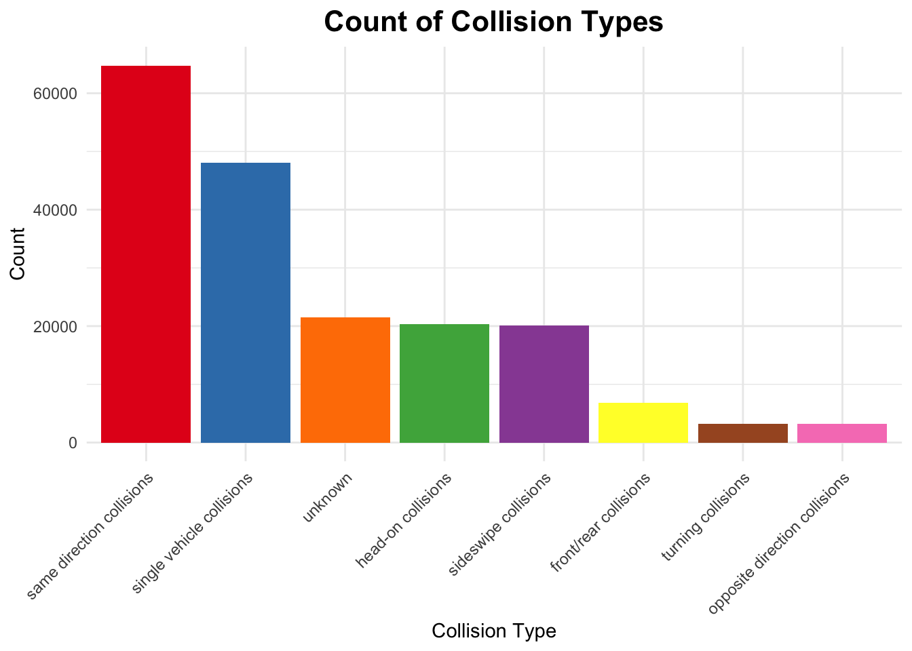
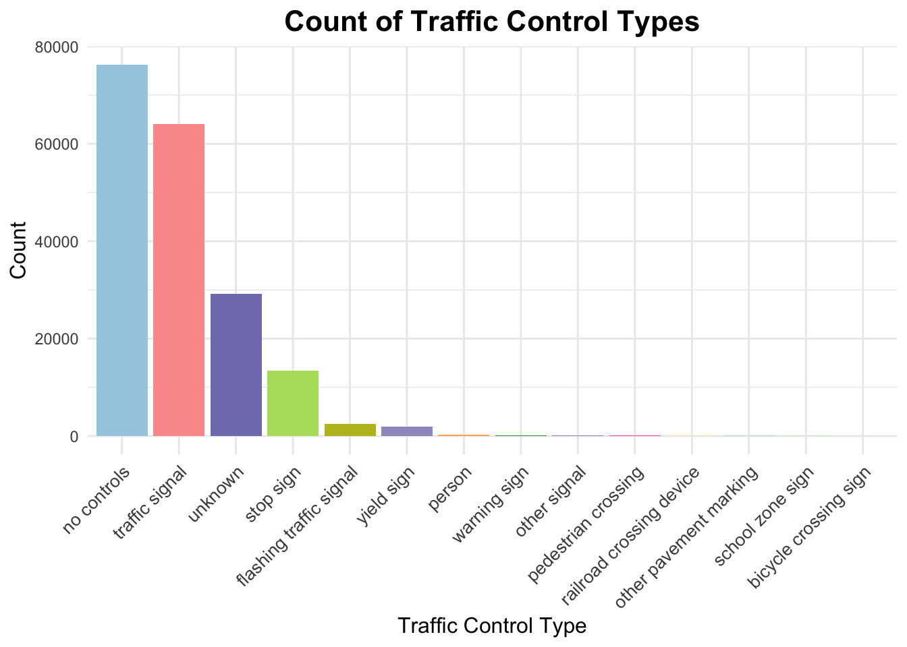

To start, we explore the overall distribution of collision types to understand the major categories of traffic incidents. This foundational view helps us identify which types of collisions are most prevalent.
Code
# Bar Plot (Frequency of Collision Types)colors_for_collisions <-c("same direction collisions"="#E41A1C", "single vehicle collisions"="#377EB8", "head-on collisions"="#4DAF4A", "sideswipe collisions"="#984EA3", "unknown"="#FF7F00", "front/rear collisions"="#FFFF33", "turning collisions"="#A65628", "opposite direction collisions"="#F781BF")collision_counts <- car_crash |>group_by(Collision.Type) |>summarise(Count =n())ggplot(collision_counts, aes(x =reorder(Collision.Type, -Count), y = Count, fill = Collision.Type)) +geom_bar(stat ="identity", show.legend =FALSE) +scale_fill_manual(values = colors_for_collisions) +labs(title ="Count of Collision Types",x ="Collision Type",y ="Count" ) +theme_minimal() +theme(axis.text.x =element_text(angle =45, hjust =1),plot.title =element_text(size =16, face ="bold", hjust=0.5) )

This bar chart displays the counts of different collision types in the dataset. The most frequent collision type is same direction collisions, followed by single vehicle collisions. Less common types include turning collisions, front/rear collisions and opposite direction collisions. A notable portion of collisions is categorized as unknown, which may require further investigation or clarification. This distribution highlights that many crashes involve vehicles traveling in the same direction, emphasizing potential issues such as tailgating or lane changes.
Next, we examine the types of routes where these collisions occur most frequently. By linking collision types to specific route categories, we gain insights into the environments contributing to these incidents.
This bar chart illustrates the distribution of traffic collisions across different route types. The most common route types are Maryland (state) and county roads, which together account for a majority of the reported collisions. Unknown route types also make up a significant portion, indicating missing or unclear data. Other route types, such as municipality roads, US (state) roads, and interstate highways, have lower counts but still contribute meaningfully to the overall distribution. These findings highlight that state and county roads are the primary locations for traffic incidents, emphasizing the importance of focusing safety measures and traffic management efforts on these areas.
To combine these insights, we explore how specific collision types vary across different route types. This visualization reveals patterns unique to certain routes, such as the dominance of ‘single vehicle collisions’ on rural roads or ‘front/rear collisions’ on urban streets.
Code
colors_for_route_type <-c("unknown"="#FF7F00", "maryland (state)"="#E377C2", "county"="#66C2A5", "municipality"="#8DA0CB", "interstate (state)"="#2CA02C", "us (state)"="#E6550D", "other public roadway"="#A63603", "government"="#08519C", "ramp"="#17BECF", "service road"="#8C564B", "municipality route"="#D62728", "spur"="#6A51A3", "local route"="#228B22", "bicycle route"="#663399", "private route"="#FFFF33", "crossover"="#BDB76B")collision_summary <- car_crash |>filter(!is.na(Route.Type), !is.na(Collision.Type)) |>group_by(Route.Type, Collision.Type) |>summarize(Collision.Count =n(), .groups ='drop') |>arrange(Collision.Type, desc(Collision.Count))collision_summary$Route.Type <-factor(collision_summary$Route.Type, levels =unique(collision_summary$Route.Type))ggplot(collision_summary, aes(x = Route.Type, y = Collision.Count, fill = Route.Type)) +geom_bar(stat ="identity", position ="dodge") +labs(title ="Collision Types by Route Type",x ="Route Type",y ="Number of Collisions",fill ="Route Type" ) +scale_fill_manual(values = colors_for_route_type) +# Use the custom color schemetheme_minimal() +theme(axis.text.x =element_text(angle =45, hjust =1),legend.position ="bottom",plot.title =element_text(hjust =0.5, size =16, face ="bold") ) +facet_wrap(~ Collision.Type, scales ="free_y", ncol =4)
The Maryland (state) category and county category exhibit the highest number of collisions across nearly all types, including single vehicle collisions, head-on collisions, and same direction collisions, suggesting that local roads are particularly prone to accidents. This pattern may result from higher traffic volumes, frequent stops, or more complex navigation on local roads. County roads also account for a significant number of collisions, especially single vehicle collisions and same direction collisions, though the majority of collisions still occur on local routes. Notably, opposite direction collisions are predominantly observed on county routes, which are often characterized by two-lane undivided structures and higher speed limits, increasing the risk of head-on crashes. This emphasizes the need for targeted safety measures such as centerline rumble strips, enhanced signage, and improved road design to reduce risks on county roads. Collisions under the “unknown” category are disproportionately high on unknown route types, suggesting potential issues in data collection or reporting that could hinder the accurate analysis of trends. In contrast, bicycle routes, spurs, service roads, and private roads report the lowest collision counts, likely reflecting lower usage or dedicated infrastructure for these road types. These findings highlight the importance of prioritizing safety interventions and infrastructure improvements, particularly on local and county roads where collisions are most prevalent.
3.2 The Role of Traffic Controls
Traffic control systems play a crucial role in managing safety on the road. Here, we analyze the distribution of traffic controls across incidents to understand their presence or absence in various collision scenarios.
Code
# Bar Plot (Frequency of Traffic Control Types)car_crash <-read.csv("crash2.csv")traffic_control_counts <- car_crash |>group_by(Traffic.Control) |>summarise(Count =n()) |>arrange(desc(Count))colors_for_traffic_control <-c("no controls"="#A6CEE3", "traffic signal"="#FB9A99", "unknown"="#807DBA", "stop sign"="#B3DE69", "flashing traffic signal"="#BCBD22","yield sign"="#9E9AC8", "person"="#FDAE6B", "warning sign"="#31A354", "other signal"="#9C9EDE", "pedestrian crossing"="#F768A1", "railroad crossing device"="#F7FB6B","other pavement marking"="#7FCDBB", "school zone sign"="#B2DF9A", "bicycle crossing sign"="#969696")ggplot(traffic_control_counts, aes(x =reorder(Traffic.Control, -Count), y = Count, fill = Traffic.Control)) +geom_bar(stat ="identity", show.legend =FALSE) +scale_fill_manual(values = colors_for_traffic_control) +labs(title ="Count of Traffic Control Types",x ="Traffic Control Type",y ="Count" ) +theme_minimal() +theme(axis.text.x =element_text(angle =45, hjust =1, size =10), plot.title =element_text(size =16, face ="bold", hjust=0.5),axis.title =element_text(size =12) )

The bar chart reveals that most crashes occurred in areas with no traffic controls, highlighting a significant safety concern. Traffic signals are the second common incidents, indicating that while they regulate traffic, they remain accident-prone due to possible human or mechanical errors. Stop signs also contributed to crashes but at a much lower frequency. Other measures, such as flashing signals and yield signs, showed minimal crash counts, suggesting either limited usage or greater effectiveness. This analysis emphasizes the need for enhanced safety measures, especially in uncontrolled areas, to reduce accidents and improve road safety for all users.
Before analyzing the influence of traffic controls on crash outcomes, we take a closer look at the overall distribution of crash types. This provides essential context for understanding how different crash severities are impacted by traffic management.
Code
# Bar Plot (Frequency of Car Crash Types)car_crash_counts <- car_crash |>group_by(ACRS.Report.Type) |>summarise(Count =n()) |>arrange(desc(Count))colors_for_crash_type <-c("fatal crash"="#CC7A8B","injury crash"="#7FBF7F", "property damage crash"="#89CFF0")ggplot(car_crash_counts, aes(x =reorder(ACRS.Report.Type, -Count), y = Count, fill = ACRS.Report.Type)) +geom_bar(stat ="identity") +scale_fill_manual(values = colors_for_crash_type) +labs(title ="Frequency of Crash Types",x ="Crash Type",y ="Count" ) +theme_minimal() +theme(axis.text.x =element_text(angle =45, hjust =1),plot.title =element_text(size =16, face ="bold", hjust=0.5))
This bar plot visualizes the distribution of crash types in the dataset, categorized into three main types: property damage crashes, injury crashes, and fatal crashes. The plot reveals that property damage crashes are the most frequent, significantly outnumbering the other two types. Injury crashes are the second most common, while fatal crashes occur relatively infrequently. The stark difference in counts highlights the prevalence of less severe accidents compared to life-threatening or fatal incidents. This foundational analysis provides critical context for further exploration into the factors that influence crash severity.
To evaluate the effectiveness of traffic controls, we explore their relationship with crash severity. This mosaic plot highlights how the presence of stop signs or traffic signals correlates with fewer severe crashes.
The mosaic plot shows how different types of traffic controls, such as “no controls,” “stop signs,” and “traffic signals”, relate to the severity of crashes. Notably, property damage crashes dominate across all traffic control types. Crashes at intersections with “no controls” are the most frequent overall, especially for injury and property damage incidents, emphasizing the risks of unregulated roadways. On the other hand, crashes at “traffic signals” are less likely to result in fatalities but still significant for property damage. The low number of crashes at “stop signs” suggests their relative effectiveness in regulating traffic, though their small sample size may warrant further study. This analysis highlights the critical role of traffic control measures in reducing severe crash outcomes.
To delve deeper, we use an alluvial plot to trace the flow from traffic controls to collision types and crash outcomes. This comprehensive view uncovers trends, such as the role of ‘no controls’ in severe crashes.
Warning in to_lodes_form(data = data, axes = axis_ind, discern =
params$discern): Some strata appear at multiple axes.
Warning in to_lodes_form(data = data, axes = axis_ind, discern =
params$discern): Some strata appear at multiple axes.
Warning in to_lodes_form(data = data, axes = axis_ind, discern =
params$discern): Some strata appear at multiple axes.
This alluvial diagram highlights the relationship between traffic control types, collision types, and crash severities. Areas with “no controls” account for the majority of single vehicle and sideswipe collisions, leading predominantly to property damage crashes and a smaller proportion of injury crashes. This pattern underscores the risks posed by unregulated roadways, especially for drivers prone to lane changes or loss of control. In contrast, “traffic signals” are primarily linked to same direction collisions, contributing significantly to property damage and injury crashes, indicating possible driver errors or violations at intersections. “Stop signs” are less frequent and associated mainly with sideswipe and same direction collisions. To mitigate these risks, implementing traffic controls, such as rumble strips or advanced warning systems, in high-risk areas could help prevent single vehicle incidents, while improving signal visibility and timing may reduce same direction collisions.
3.3 Influence of Speed and Light Conditions
Speed limits are another critical factor influencing collision outcomes. This box plot illustrates the range of speed limits associated with different collision types, revealing that higher speeds are often linked to severe incidents.
Code
ggplot(crash2_data, aes(x = Collision.Type, y = Speed.Limit)) +geom_boxplot(outlier.color ="red", fill ="lightblue") +labs(title ="Variation of Speed Limits Across Collision Types",x ="Collision Type",y ="Speed Limit" ) +theme_minimal() +theme(axis.text.x =element_text(angle =45, hjust =1),plot.title =element_text(size =16, face ="bold", hjust=0.5))
The boxplot suggests that while speed limits across collision types share some similarities, there are notable differences in the median and variability, particularly for opposite direction collisions and unknown collisions. Opposite direction collisions show a lower median speed limit, suggesting they often occur on roads with relatively lower speed limits. Other groups shows a similar median, showing that other types of collisions are most likely to occur on roads with speed limit between 30-40.
Building on the previous analysis, this histogram focuses on crash types and their speed limit distributions. It highlights whether lower speed limits effectively reduce the severity of crashes.
This ridge plot shows how speed limits are distributed across different crash severity levels: fatal crashes, injury crashes, and property damage crashes. Fatal crashes tend to occur at higher speed limits, with a notable peak around 40 mph. Injury crashes show a broader distribution of speed limits, with a peak at approximately 35 mph. Property damage-only crashes are concentrated at moderate speed limits, particularly around 30-35 mph. These types of crashes are less severe and are often associated with lower-speed urban environments or rear-end collisions. Higher speeds are strongly associated with more severe crashes (injuries and fatalities), while lower-speed environments tend to result in property damage-only incidents. This analysis highlights the importance of speed regulation and traffic control measures in reducing crash severity and preventing fatalities. The ridgeline plot effectively compares the probability distributions of different crash types across speed limits although showing some multi-modality. It highlights the speed ranges with higher likelihoods for specific crash types.
Environmental factors, such as lighting, also play a role in crash severity. This stacked bar chart shows the distribution of crash types under different light conditions, emphasizing the higher frequency of incidents in daylight and ‘dark-lighted’ scenarios.
The majority of traffic accidents happen in daylight conditions, which could be attributed to higher traffic volumes during these times, and dark with lights on is the second highest frequently occurring accident conditions. Property damage crashes are the majority crash type under all categories and injury crash is the second highest, suggesting that most crashes are minor accidents instead of severe collisions. Regardless of light conditions, fatal crashes are a small proportion of total crashes, suggesting that most accidents are not life-threatening.
To quantify these relationships, we use a heatmap to visualize the correlation between crash types and specific light conditions. This provides a clearer picture of how lighting impacts safety.
Code
# Correlation Heatmap (Crash Types and Light Conditions)clean_data <-na.omit(car_crash[, c("ACRS.Report.Type", "Light")])clean_data$Light <-trimws(clean_data$Light)clean_data$Light[clean_data$Light ==""] <-"unknown"freq_table <-table(clean_data$ACRS.Report.Type, clean_data$Light)freq_data <-as.data.frame(freq_table)colnames(freq_data) <-c("ACRS.Report.Type", "Light", "Frequency")ggplot(freq_data, aes(x = Light, y = ACRS.Report.Type, fill = Frequency)) +geom_tile(color ="white") +geom_text(aes(label = Frequency), color ="black", size =3) +scale_fill_gradient(low ="lightblue", high ="darkblue") +labs(title ="Correlation Heatmap: ACRS Report Type and Light Conditions",x ="Light Condition",y ="ACRS Report Type",fill ="Frequency" ) +theme_minimal(base_size =15) +theme(axis.text.x =element_text(angle =45, hjust =1),plot.title =element_text(hjust =0.5, face ="bold") )
The heatmap visualizes the distribution of crash report types across different light conditions. Daylight accounts for the majority of crashes, especially property damage crashes (~80,386) and injury crashes (~46,945). In dark-lighted conditions, property damage crashes (~27,812) and injury crashes (~14,983) are also frequent, but much lower than in daylight. Crashes significantly decrease under dark-not-lighted, dusk, and dawn conditions. Fatal crashes are rare across all light conditions, with the highest (~200) occurring during daylight. The data highlights how visibility and lighting impact crash frequencies, with daylight showing the highest crash occurrences likely due to increased traffic volume.
3.4 Temporal Patterns
Time of day significantly influences accident frequency. This line plot reveals temporal patterns, such as peak accident times during rush hours, providing crucial insights for planning interventions.
Code
# Line Plot (Time)library(lubridate)
Attaching package: 'lubridate'
The following objects are masked from 'package:base':
date, intersect, setdiff, union
Code
crash2_data <- crash2_data %>%mutate(Crash.DateTime =as.POSIXct(Crash.Date.Time, format ="%m/%d/%Y %I:%M:%S %p"),Hour =hour(Crash.DateTime) )accident_by_hour <- crash2_data %>%group_by(Hour) %>%summarise(Accident_Count =n(), .groups ="drop")ggplot(accident_by_hour, aes(x = Hour, y = Accident_Count)) +geom_smooth(se =FALSE, color ="red", size =1, method ="loess", span =0.3) +labs(title ="Line Plot of Accidents by Hour of Day",x ="Hour of Day",y ="Number of Accidents" ) +theme_minimal() +theme(plot.title =element_text(size =16, face ="bold", hjust=0.5))
Warning: Using `size` aesthetic for lines was deprecated in ggplot2 3.4.0.
ℹ Please use `linewidth` instead.
`geom_smooth()` using formula = 'y ~ x'
The number of accidents are relatively low during early morning and late nights, and this is likely due to lower traffic volume during these hours when most people are asleep.
A noticeable increase in accidents begins around 6 AM, peaking around 8–9 AM.This corresponds to the morning rush hour when traffic volume is high as people commute to work or school.
After the morning peak, the frequency of accidents decreases during the late morning and early afternoon hours. This is likely due to reduced traffic volume during non-peak hours.
A second, more significant peak occurs in the late afternoon, with the highest number of accidents observed around 4–5 PM. This is due to the evening rush hour as people commute home.
After 7 pm, the number of accidents decreases because the traffic volume decreases. While traffic may still exist during this time, it is significantly reduced compared to rush hours.
The plot mirrors traffic volume throughout the day, with fewer accidents during early morning hours (midnight to 5 AM) due to minimal activity. Peaks in accidents during the morning (6–9 AM) and evening (3–6 PM) align with rush hours when road usage is highest, while the midday dip (10 AM to 2 PM) reflects lighter traffic. This trend highlights how accident frequency closely follows daily traffic patterns.
Finally, combining time with collision types and crash outcomes in a stacked bar chart offers a comprehensive view of how collision dynamics evolve throughout the day.
Code
# Stacked Bar Chart (Collision Types & Crash Types & Time)collision_data <- car_crash |>filter(!is.na(Collision.Type), !is.na(ACRS.Report.Type)) |>mutate(Hour =hour(hms(format(strptime(Crash.Date.Time, "%m/%d/%Y %I:%M:%S %p"), "%H:%M:%S")))) |>group_by(Hour, Collision.Type, ACRS.Report.Type) |>summarise(Count =n(), .groups ="drop") |>group_by(Hour, ACRS.Report.Type) |>mutate(Proportion = Count /sum(Count))ggplot(collision_data, aes(x =factor(Hour), y = Proportion, fill = Collision.Type)) +geom_bar(stat ="identity", position ="fill") +facet_wrap(~ ACRS.Report.Type, ncol =3, scales ="free_x") +scale_y_continuous(labels = scales::percent) +labs(title ="Percentage of Collision Types by Hour and Report Type",x ="Hour of Day",y ="Percentage",fill ="Collision Type") +theme_minimal() +theme(axis.text.x =element_text(angle =45, hjust =1, size =10),legend.position ="bottom",plot.title =element_text(size =16, face ="bold", hjust=0.5))
This faceted stacked bar chart highlights distinct patterns in collision types based on the time of day and crash severity. During daylight hours, same direction collisions and sideswipe collisions are the most common, likely due to higher traffic density, frequent lane changes, and the increased likelihood of vehicles traveling approximately. However, during nighttime hours, single vehicle collisions become significantly more prevalent. This shift can be attributed to reduced visibility, impaired driver alertness, and environmental factors such as poorly lit roads or obstacles that are harder to detect in the dark. One particularly notable finding is the severity associated with head-on collisions, which are far more likely to result in fatal crashes compared to injury or property damage crashes. This shows head-on collisions’ potential to cause severe injuries or fatalities, even at relatively lower traffic volumes. In contrast, same direction collisions, while frequent, rarely result in fatal outcomes. This suggests that these collisions are typically less severe, possibly involving lower speeds or more controlled conditions. These patterns highlight the need for specific safety improvements to reduce collisions. For example, nighttime single vehicle crashes could be minimized with better street lighting, rumble strips to keep drowsy drivers alert, and public awareness campaigns about the dangers of impaired driving. On the other hand, preventing head-on collisions may require clearer road markings, better signage, and installing median barriers to separate traffic, especially on high-speed rural roads. These observations provide a clear direction for using data to inform strategies that improve road safety and address the risks linked to different types of crashes at various times.